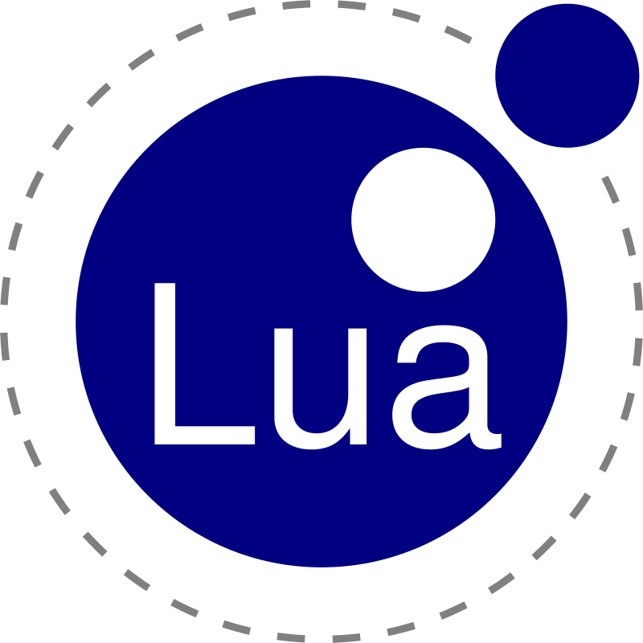

Um guia básico para a linguagem de Programação "Lua"

Email:
Senha
SOBRE A LINGUAGEM
ㅤㅤㅤ Lua é uma linguagem de programação leve, poderosa e eficiente, projetada para ser incorporada em diversas aplicações. Ela foi desenvolvida no Brasil por uma equipe liderada por Roberto Ierusalimschy, Luiz Henrique de Figueiredo e Waldemar Celes no PUC-rio em 1993, Lua tem ganhado destaque por sua simplicidade, flexibilidade e desempenho. Com uma sintaxe elegante e fácil de aprender, Lua é frequentemente escolhida para tarefas que exigem eficiência e baixo consumo de recursos, como jogos, sistemas embarcados e automação. Sua versatilidade é evidente na capacidade de se adaptar a diferentes paradigmas de programação, incluindo programação procedural, orientada a objetos e funcional. O projeto inicialmente focou na necessidade de uma linguagem de script leve e eficiente para lidar com a complexidade de sistemas gráficos. A primeira aplicação prática da Lua foi no desenvolvimento de um software chamado "Tecgraf PUC-Rio" para visualização e análise de dados técnicos e científicos. Os criadores buscavam uma linguagem que fosse fácil de incorporar em outros sistemas, que tivesse uma sintaxe simples e fosse eficiente em termos de desempenho.
VARIÁVEIS
as variáveis são elementos fundamentais para armazenar e manipular dados. A linguagem é dinamicamente tipada, ou seja, você não precisa determinar o tipo de uma variável ao declará-la. Por exemplo, você pode simplesmente atribuir um valor a um nome de variável, e o programa entenderá automaticamente o tipo. Se não atribuir uma variável do tipo local, ela automaticamente será do tipo global. A variável do tipo Local é normalmente utilizado para evitar conflitos e manter a organização do código. A linguagem possui 4 diferentes tipos de variável local, sendo elas bool, string, numero e table.
Redes Sociais